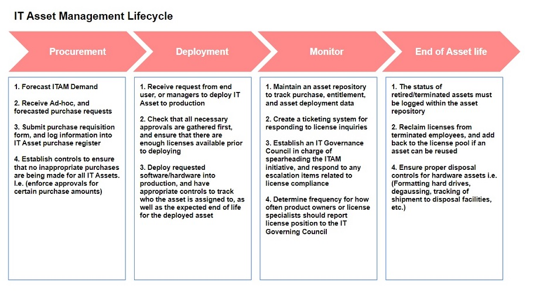

Answering the that Question Friends & Family always ask: What do you do again?
Management Consulting, in a nutshell
Think of what Mechanics are for. Your car breaks down, or you notice something seems off, or you want to made modifications to the car. Rather than doing the work yourself, because maybe you do not know how, or don’t have the time to invest/learn, you bring it to a mechanic to diagnose, treat, and fix your issues, or make enhancements to your vehicle. They then charge you for labor and parts.
Step 1: Define IT Asset Management, and WHY it is Important
IT Asset Management (ITAM) is how an organization monitors and tracks hardware & software purchases, for the purpose of understanding the total IT estate to help with allocating budget for forecasting additional hardware & software purchases in the coming year. ITAM is an umbrella of an organization’s Hardware Asset Management (HAM) and Software Asset Management (SAM).
Knowing where IT assets are located, and how they are allocated throughout the organization is fundamental in management’s decisions for expanding the organization’s IT estate. Furthermore, having a firm ITAM understanding is essential for stakeholders of multiple groups throughout an organization, when responding to Software Audit Requests. Google Nike & Quest Audit, for a good example of what happens when sufficient ITAM measures are not in place. Lastly, improved tracking of IT Assets will mitigate Cyber Risk implications. Think of it this way, if an organization has poor ITAM tracking mechanisms, more specifically, if the organization has no idea where all of their hardware assets lie throughout the organization, then this increases the chance of having hardware with confidential client data getting into the hands of third-party perpetrators.
Step 2: Meet with existing ITAM Stakeholders
- Finance, Accounting, and Procurement
- Infrastructure & Operations
- Enterprise Architecture
- Internal Audit
- The Organization's License Compliance Team
- Office of the CIO/CTO
After meeting with all members from the above teams, and additional members as needed, document existing processes and tools used by the organization to perform ITAM activities. It is reccomended to create a heat mapping of different tools used throughout the organization, as well as a Swimlane diagram to capture different processes throughout different teams. This is also an opportunity to assess for redundant processes
Step 3: Demonstrate the ITAM Lifecycle
The following diagram depicts the entire IT Asset Management Lifecycle from the beginning of an Asset's life, to retirement
Step 4: Define Key Performance Indicators for why client should care about ITAM
- Increased Annual Cost Savings Opportunities
- Increased Software Audit Response Efficiency
- Identity Symptoms of an Immature ITAM Environment, and Measures for Improvement
- Increase Overall Organization Decision Making for IT Budgeting, and Tech Strategy
Step 5: Map out the client’s existing ITAM Governance Model, and all stakeholders involved
- For each stakeholder group, document existing ITAM processes, and pinpoint areas where processes are redundant, or are creating pain points for existing stakeholders.
- For each pain point identified, document recommendations to improve existing processes.
- For each client stakeholder group, understand how many employees there are, and estimate the amount of hours spent per week on unstandardized ITAM Activities. Research Gartner to pull industry standard hours that should be spent per week on ITAM.
Step 6: Obtain and Normalize Spend Data
- Normalize data via the following: Find inconsistent naming conventions, and rename i.e. (Amazon & AWS can be categorized as the same).
- Find a way to classify re-sellers, and bucket these items into their own category.
- Identify blanket purchases, and find ways to categorize these. Blanket purchases are typically for miscellaneous items, and by quantifying how much was spent on misc. Blanket items, you can demonstrate to the client that there is a need to standardize procurement operations to better capture these types of purchases, thereby increasing reliability of ITAM data.
- Identify Service fees, and look through the data to make sure that software/hardware purchases are not being miscategorized as service fees.
- Looking through major known resellers i.e. (CDW, Computacenter, Dell, En Pointe Technologies, ePlus, Insight, PC Connection, PC-Ware, SHI International, Softchoice) and be sure to pull the actual sellers from this data. For example, CDW might resell for Dell. Try to classify these types of purchases to be from Dell, not CDW.
Step 7: Analyze Spend Data
- Pull the total amount spent on Hardware, Software, Resellers, Misc. Costs.. Etc.
- Pull the amount spent per year, total spent overall, and analyze the amount spent year over year to forecast how much the company will continue to spend, depending on IT initiatives.
- Map out how much the client is spending on ITAM every year, and where the trend is. Show the difference between how much the client will spend three years out, if they do not do anything to improve ITAM, versus if they were to implement ITAM organizational effectiveness, standardize ITAM processes & Controls, and potentially implement a SAM Tool.
Reccomended Next Steps
- Centralize the ITAM lifecycle.
- Define organizational structure for responding to Audit requests, and responsibilities throughout the organization for managing ITAM.
- Consider automation through purchasing a SAM Tool.
- Consider putting together an effective license position for the client’s major vendors.